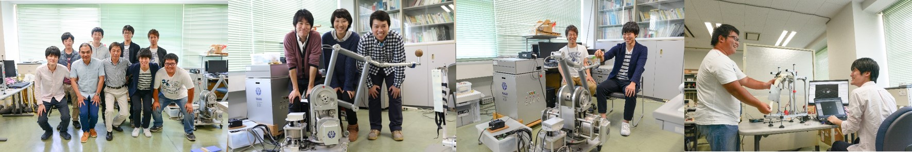

ロボット工学，制御工学，計測工学，モデリング技術を融合した
「人を支援する，人にやさしい，地球にやさしい技術の創出」を目指します．
創造性豊かな技術者に育てる環境を提供します．
チャレンジング・スピリッツを持った学生さん集合！
平成23年4月着任の佐藤徳孝助教と一緒に，森田・佐藤研として活動しています．

※写真をご覧いただくためには，事前にFacebookのログインが必要です
▶2020.12.
第21回計測自動制御学会システムインテグレーション部門講演会(SI2020)にて周君(M2)と戸谷君(M2) が発表予定．
▶2020.10.31
第10回コンプリヘンシブ・リハビリテーション懇話会にて森田先生が教育講演を．偕行会リハビリテーション病院の田丸病院長と共同講演．題目「AIによる回復期脳神経患者のFIM予測の試み/AIに関する解説と疑問」
▶2020/10/9-11
第38回日本ロボット学会学術講演会にて牛丸君@M1が発表．
▶2020/9/3-4
令和2年度電気・電子・情報関係学会東海支部連合大会にて福田君(M1)が発表．
▶2020/5/28-29
ロボティクス・メカトロニクス講演会2020（金沢）にて，田中君(M2)，西谷さん(M1)が発表．
▶2020/3/26
学位記授与式は中止でしたが，笪さん，井上君，小塚君，西尾君，野村君，秦野君，星野君，米澤君の8名は修士号，西谷さん，牛丸君，森本君，深谷君，福田君，山内君の6名は学士号を取得しました．修士7名が研究室を旅立ちます．
▶2020/2/14
研究室の謝恩会をAjita(アジータ)名古屋駅にて開催．参加者は30名．
▶2020/1/15
キャンパスベンチャーグランプリ中部大会にて、野村正和君@M2が特別賞
名古屋産業人クラブ会長賞を受賞。「フラワー×ITで地域小売を元気に！アプリHanaRoman」<<新聞記事はコチラ>>
▶2020/1/13-16
The 2020 Int. Conf. on Artificial
Life and Robotics (ICAROB 2020, Beppu, Oita)にて，佐藤先生，犬塚さん@D2，Chu君@M1が発表．<<写真は後日掲載予定>>
▶2019/12/17
研究室の忘年会を居酒屋KABTO
名古屋駅にて開催．OBも集まり参加者34名．<<写真はコチラ>>
▶2019/12/9-13
ポーランド・ウッチ工科大学(TUL)と本学とのErasmus+の下で，TULにてJapan-Poland
International Workshop on Technologies supporting rehabilitation and
medical servicesを開催．森田先生，加藤昇平先生，田邉先生@湘南医療大学，笪さん@M2が研究成果を発表．Jonscher
Hospitalにて研究打合せと病院見学．森田先生はTULにてロボットに関する講義も．田中君@M2も同行し，途中でポズナン工科大に移動して研究打合せも．<<写真はコチラ>>
▶2019/12/2
第3回 医・理・工連携みらい会議 一般社団法人 医療・環境・再生研究機構（MERRO)設立10周年
国際先端・生物学・医学・工学科学院（IAIBME)
にて森田先生が基調講演の予定．題目は「医工連携によるニューロリハビリロボット・デバイスと腰痛治療デバイスの開発」．
▶2019/11/20-21
2019 Poland-Japan International Workshop on Rehabilitation Engineering
(本学)を開催．ポーランド・ウッチ工科大学と本学とのErasmus+によるもので，Dr.
Igor Zubrycki先生が来日．
<<写真はコチラ>>
▶2019/11/18
碧海信用金庫・名古屋工業大学 産学官金連携機構 共同企画『自動車プラスワン』を目指す！中堅・中小企業応援セミナー 第２回セミナー
産学連携をどう進めるか
～身近な事例と各研究分野の紹介～にて，森田先生がショートプレゼンテーションを．タイトルは「療法士を助け、リハビリを変える支援ロボット＆デバイス」．
▶2019/11/14
INNOVATOR'S GARAGEのアカデミックナイト（ナディアパーク）にて，森田先生が講演．講演題目は「療法士を助け、リハビリを変える支援ロボット＆デバイス」．
▶2019/11/6-8
Rehabilitation Engineering & Assistive Technology Society of KoreaによるThe
13th RESKO Technical Conference 2019 (RESKO2019, KINTEX)にて森田先生が発表．<<写真はコチラ>>
▶2019/11/5
介護ロボットあいち・なごやフォーラム2019（吹上ホール）にて，iWakkaを機器展示．
▶2019/11/1
名工大テクノフェアにて研究シーズポスター発表に出展．出展テーマは「療法士を助け、リハビリを変える支援ロボット＆デバイス」．
▶2019/10/30
岐阜県産業経済振興センター主催
ヘルスケア産業展開支援事業「医療福祉機器開発セミナー」にて森田先生が講演．講演題目は「リハビリ支援機器の開発、そこから学んだ医療福祉機器の開発ポイント」．
▶2019/10/28
科学技術交流財団の研究会「既存のソフトウェアを活用した人工知能ロボットの開発」第7回研究会を名工大にて開催．野村君@M2による実習も．
▶2019/10/24
愛知県立刈谷北高等学校にて森田先生が2年生を対象に模擬講義を．
▶2019/10/15-18
19th International Conference on Control,
Automation and Systems (ICCAS 2019, Jeju,
Korea)にて，笪さん@M2、グエンさん@M1、時長君@M1が発表.<<写真はコチラ>>
▶2019/10/14
Dong-Eui University（韓国・東義大学）にて2019Korea–Japan
International Workshop on Rehabilitation
Engineeringを開催．森田先生，笪さん@M2，グエンさん@M1，時長君@M1が発表．<<写真はコチラ>>
▶2019/10/10
島根県立平田高等学校からの大学見学会にて研究室見学を．
▶2019/10/10
名古屋産業振興公社
テクノプラザナゴヤの勉強会にて，森田先生と野村君@M2が講演．講演題目は「療法士を助け、リハビリを変える支援ロボット＆デバイス」．
▶2019/10/2
上海理工大学のInstitute of
Rehabilitation Engineering and Technologyの喩洪流教授が来訪されて研究交流と研究室見学を．<<写真はコチラ>>
▶2019/9/27-28
研究室ゼミ旅行で滋賀県の近江八幡方面に行きました．参加者20名．初日は滋賀農業公園ブルーメの丘でパターゴルフ，BBQ，レザークラフト体験などを．国民旅館千鳥荘に宿泊してBBQと宴会を．二日目は近江八幡を散策し，道の駅アグリパーク竜王で梨狩りも．盛り沢山の充実した旅行でした．<<写真はコチラ>>
▶2019/9/18
科学技術交流財団の研究会「既存のソフトウェアを活用した人工知能ロボットの開発」第6回研究会を名工大にて開催．野村君@M2による実習も．
▶2019/9/11
2019高速信号処理応用技術学会研究会(名工大)にて森田先生，犬塚@D3が発表.
▶2019/9/10
ポズナン工科大学のKozliwski教授と加藤昇平研究室と一緒にPoland-Japan International Workshop 2019 on
Intelligent Robot and Motion Controlを開催．<<写真はコチラ>>
▶2019/9/2-5
森田先生が，中国・清華大学の季林紅教授の研究室を訪問．首都医科大学附属北京リハビリテーション病院にて2019
China - Japan International Workshop on Rehabilitation and Medicine
Engineeringを開催．
<<写真はコチラ>>
▶2019/8/29-30
イノベーション・ジャパン2019にて，野村君@M2の学生発ベンチャーとiWakkaが紹介されました．<<写真はコチラ>>
▶2019/8/28-9/1
森田先生が，ハンガリー・ブダペスト工科経済大学のBalint
Kiss先生の研究室を訪問．<<写真はコチラ>>
▶2019/8/22
森田研究室主催 技術セミナー「工学技術で築く将来のリハビリ」を開催．
▶2019/8/5-9
森田先生，野村君@M2，秦野君@M2が，国際連携強化に関する打合せのためにタイのモンクット王工科大学ラートクラバン校(KMITL)，チュラロンコン大学(CU)，King
Chulalongkorn Memorial Hospitalを訪問．KMITLの国際交流担当副学長Dr.
Chaiyan Jettanasen，KMITLの研究担当副学長Dr.
Somyot Kaitwanidvilai，KMITLの小塚君@M2の指導教員Dr.
Rutchanee Gullayanon，CUのFaculty of ArchitectureのDr.
Pornsan Vichienpradit，CUのFaculty of Medicine, Rehabilitation
Medicine DepartmentのDr.
Krisna Piravej，Dr.
Wasuwat Kitisomprayoonkulらにお世話になりました．<<写真はコチラ>>
▶2019/8/2
さくらサイエンス事業にて来日のハノイ工科大学の教員2名、学生10名が研究室見学に．日本のエンジニアも参加して「来日歓迎・越日交流会」を開催．<<写真はコチラ>>
岐阜県立関高等学校の学生3名が、SGH（スーパーグローバルハイスクール事業）の活動として研究室見学に．
▶2019/8/1-10/31
本学の国際化推進事業（NITech Grant for Global Initiative Projects）に採択されました．事業名「医療リハビリロボット・デバイスの研究開発の国際化推進のための学生派遣」．この事業の一環として，米澤君@M2，小塚君@M2，伊藤君@M1が特別研究派遣学生として以下に短期留学．米澤君：Budapest University of Technology and EconomicsのKiss Bálint准教授の研究室に2か月間（2019.9.1-10.31），小塚君：King Mongkut's Institute of Technology LadkrabangのRutchanee Gullayanon准教授の研究室（2019.8.1-8.31）と東儀大学のInhynk Moon教授の研究室（2019.9.1-9.30）の2ヵ月間，伊藤君：清華大学の季林紅教授の研究室に2か月間（2019.9.1-10.31）．
▶2019/7/20
タナベセラピー研究会名古屋セミナーが本学にて開催．森田先生も講演．研究室学生も参加．
▶2019/7/8-10
12th International Workshop on Robot Motion and Control (RoMoCo'19, Poznań University of Technology, Poland)にて，野村君@M2，秦野君@M2，戸谷君@M1，佐藤先生が発表．戸谷君はThe 2nd place of the RoMoCo 2019 Young Author Awardを受賞．<<写真はコチラ>>
▶2019/6/9-15
第56回日本リハビリテーション医学会学術集会（神戸コンベンションセンター）の企業展示にて「把握力調整能力評価トレーニングデバイス iWakka」を出展．6/12-13は第13回国際リハビリテーション医学会世界会議と併催．<<写真はコチラ>>
▶2019/6/12-15
共同研究先のポーランドのLodz University of TechnologyのDr. Igor Zubrycki先生とMedical University of LodzのProf. Elzbieta Miller先生を本学に招聘．6/10と6/13にPoland-Japan International Workshop 2019 on Rehabilitation Engineeringを開催．Zubrycki先生，Miller先生，および湘南医療大の田邉浩文教授による講演，研究室学生8名のプレゼン，森田先生の授業の中でZubrycki先生のミニ講義，研究室見学，偕行会リハビリテーション病院のリハビリ現場の視察を実施．<<写真はコチラ>>
▶2019/6/6
中国地質大学(China University of Geosciences)の自動化学院(School of Automation)のProf. Min Wuらが研究室見学を．
▶2019/6/5-8
科学技術交流財団の研究会「既存のソフトウェアを活用した人工知能ロボットの開発」の活動としてベトナム視察研修を，DENSO MANUFACTURING VIETNAM，Hanoi University of Science and Technology，GMO-Z.com RUNSYSTEMを視察．Nguen@M1さんも同行．<<写真はコチラ>>
▶2019/6/2
Nguyenさん@M1が、タナベセラピー研究会のタナベセラピスト認定試験に合格．<<写真はコチラ>>
▶2019/6/1
野村君@M2が、Tongali ビジネスプランコンテストにおいて優秀賞第４位入賞．タイトルは「脳卒中リハビリテーションのためのソーシャルものづくりネットワーク RehaNe」<<写真はコチラ>><<大学のHP>>
▶2019/5/31-6/2
第12回タナベセラピー八ヶ岳合宿研修に森田先生他4名の学生が参加．
▶2019/5/30-6/1
第22回国際福祉健康産業展ウェルフェア2019（ポートメッセなごや）にて「名古屋工業大学 電気・機械工学専攻 森田研究室：リハビリテーション支援デバイス」を出展．併催行事である医療・福祉ビジネスセミナー(5/30)にて「リハビリテーションに寄与するロボット技術セミナー：療法士を助け、リハビリを変える支援ロボット＆デバイス」を森田先生が講演．<<写真はコチラ>>
▶2019/5/14
科学技術交流財団の研究会「既存のソフトウェアを活用した人工知能ロボットの開発」第5回研究会を名工大にて開催．野村君@M2，戸谷君@M1，田中君@M1による話題提供も．
▶2019/3/27
鶴舞公園にて研究室の花見を行いました．新メンバー１名の歓迎会も兼ねて．参加者は28名．<<写真はコチラ>>
▶2019/3/27
本田康平君(B4)が名古屋工業会賞を受賞．（名古屋工業会：名古屋工業大学全学同窓会）
▶2019/3/27
戸谷美風君(B4)が計測自動制御学会中部支部学業優秀賞を受賞．
▶2019/3/27
時長剛志君(B4)，伊藤陽平君(B4)が電影会賞を受賞．（電影会：名古屋工業大学電気系同窓会）
▶2019/3/27
大森啓士君(B5)が（公社）日本電気技術者協会中部支部霜寿賞を受賞．
▶2019/3/27
学位記授与式が行われ，NGUYEN君，趙君，安藤君，大岡君，加藤君，木谷君，斎藤君，杉山君，藤井君，横谷君，國枝君の11名は修士号，NGUYENさん，伊藤君，田中君，戸谷君，時長君，本田君，大森君の7名は学士号を取得しました．修士11名，本田君@B4が研究室を旅立ちます．<<写真はこちら>>
▶2019/3/13
研究室の歓迎会を肉バル×モダン個室 バンビーナ金山駅前店にて開催．新メンバーは４名，参加者は26名．<<写真はこちら>>
▶2019/3/13
加藤君@M2が計測自動制御学会のSI2018優秀講演賞を受賞
▶2019/2/21
平成30年度グローバル高度技術育成プログラムの成果発表会にて，趙越君(M2)，NGUYEN QUANG VY君(M2)がプログラムの修了証を授与されました．<<写真はコチラ>>
▶2019/2/14
研究室の謝恩会を神戸館名駅店にて開催．参加者は33名．<<写真はコチラ>>
▶2019/1/26
第3回森田研を応援する会を開催．技術士の方々を中心に企画．相互のプレゼンや懇親会により，人と人の交流，技術の情報交換を目的に．技術士8名，森田研OB3名，森田研学生12名参加他，併せて25名．<<写真はこちら>>
▶H30/12/13-12/15
計測自動制御学会システムインテグレーション部門講演会（SI2018，大阪工大）にて大岡君@M2，加藤君@M2，木谷君@M2が発表．
▶H30/12/12
研究室忘年会を居酒屋 呑屋かぶとにて開催．OBも含めて35名参加．<<写真はこちら>>
▶H30/12/6
第40回技術懇話会「リハビリ×AI技術で築く未来」（セッションコーディネータ：森田先生，主催：名古屋工業大学AIリハビリテーション研究会，名古屋工業大学研究協力会，後援：名古屋工業大学産学官金連携機構）を名工大にて開催．
▶H30/11/26-12/2
Poznan University of Technology (PUT, Poland)のKrzysztof Kozlowski教授の研究室と，Lodz University of Technology (LUT. Poland)のGrzegorz Granosik教授の研究室を森田先生が訪問．<<写真はコチラ>>
▶H30/11/24-H31/2/3
名古屋工業大学基金NIT国際工学賞海外派遣事業による「海外派遣学生」に秦野君@M1が採択．Poznan University of Technology(Poland)のKrzysztof Kozlowski教授の研究室に約2か月の短期留学．
▶H30/11/19
Zespół Szkół Politechniki Łódzkiej(High School of Lodz University of Technology)にて，野村君@M1がiWakkaの研究と森田研究室の紹介を．<<写真はこちら>>
▶H30/11/14
科学技術交流財団の研究会「既存のソフトウェアを活用した人工知能ロボットの開発」第4回研究会を名工大にて開催．
▶H30/11/8-10
The 12th Rehabilitation Engineering & Assistive Technology of Society Korea RESKO Technical Conference 2018 (KINTEX, Korea)にて森田先生がInvited lectureを，趙君@M2とNuyenさん@B4が発表．<<写真はコチラ>>
▶H30/11/5-6
Lodz University of Technology (LUT. Poland)のGrzegorz Granosik教授の研究室を森田先生と大森君が訪問．<<写真はコチラ>>
▶H30/11/1-6
JIMTOF2018 第29回日本国際工作機械見本市（東京ビッグサイト）の近藤製作所の展示ブースにてパラレルワイヤ教示デバイス（PAWTED）を展示．名工大，近藤製作所，ファインテクノ，およびあいち産業科学技術総合センターの協働による「知の拠点あいち」重点研究プロジェクト事業の成果．
▶H30/11/1
Budapest University of Technology and EconomicsのKiss Balint准教授がJapanese - Hungarian university meeting in Tokyoのため来日．森田先生，OB王君他と懇親会を．<<写真はコチラ>>
▶H30/10/24-25
Lodz University of Technology(TUL), Poland の Prof. Grzegorz Granosikと学生12名が研究室に来訪．TUL-Nitech International Workshopを開催し，Granosik教授のレクチャー，学生の研究発表，研究室見学，および懇親会を開催．<<写真はコチラ>>
▶H30/10/22
デンソー御器所会（名工大OB会）にて森田先生が「DENSOと私」についてショートプレゼンを．
▶H30/10/18
ロボット・IoT・サイバーセキュリティ専門人材育成講座（名古屋市主催）ロボットシステムインテグレータ講座にて 森田先生が「ロボットとAI」の講義．
▶H30/10/15
研究室内「デンソーエンジニアとの懇談会2018（講演会＋懇親会）」を開催．
▶H30/10/9
研究室歓迎会を創作和食 椿屋 名古屋店にて開催．新メンバーは愛知のものづくりを支える留学生としてベトナムからChu Quang Trung君と，中国から研究生の辛恬さんの2名．参加者は24名．<<写真はコチラ>>
▶H30/10/2-10/11
西尾君@M1が特別研究派遣学生としてLodz University of Technology (LUT. Poland)のGrzegorz Granosik教授の研究室に短期留学．
▶H30/9/28
科学技術交流財団の研究会「既存のソフトウェアを活用した人工知能ロボットの開発」第3回研究会を名工大にて開催．
▶H30/9/28
学位授与式が行われ，Le Minh Nghia君@M2が修士号を取得しました．<<写真はコチラ>>
▶H30/9/26
森田先生が分筆した書籍「工学系のための応用数学」（森北出版）が発行．
▶H30/9/25-9/27
研究室のゼミ旅行で，就職お疲れさん，院試合格，Le Minh Nghia君の卒業のお祝いを兼ねて，伊勢志摩に行きました．参加者は25名．初日はイルカ島観光，志摩パークゴルフにてパターゴルフ大会を．シーサイドホテル鯨望荘では賞品付チーム対抗クイズ合戦で盛り上がり，酒盛りも．２日目は伊勢神宮参拝，おはらい町とおかげ横丁の散策，若松屋川崎本店にて箸作り体験，夫婦岩観光を．のんびりと充実した2日間でした．<<写真はコチラ>>
▶H30/9/13-18
Budapest University of Technology and EconomicsのKiss Bálint准教授の研究室を森田先生が訪問．<<写真はコチラ>>
▶H30/9/7-9
第52回日本作業療法学会にてiWakkaを機器展示．「iWakka －指の力加減を調節する能力の評価・治療できていますか？－」（名古屋工業大学・目白大学・松栄電子研究所・アイム・八神製作所）<<写真はコチラ>>
▶H30/9/1-12/1
本学の国際化推進事業（NITech Grant for Global Initiative Projects）に採択されました．事業名「学生派遣によるヨーロッパの大学との国際連携の推進」．この事業の一環として，齋藤君(M2)と野村君(M1)が特別研究派遣学生として，それぞれBudapest University of Technology and EconomicsのKiss Bálint准教授の研究室に2か月間（2018.9.1-10.31）と，Lodz University of Technology(Poland)のGrzegorz Granosik教授の研究室に2か月間（2018.10.2-12.1）短期海外留学を.
▶H30/8/31-9/2
第11回タナベセラピー八ヶ岳合宿研修に森田先生他5名の学生が参加．
▶H30/8/24-27
ISR2018(Shenyang, China)にて，星野君@M1が発表．
▶H30/8/23
グローバル高度技術者育成プログラム平成30年度秋期修了留学生成果発表会にてLe Minh Nghia君@M2が発表して修了証を授与されました．<<写真はコチラ>>
▶H30/8/2
第2回名工大オープンキャンパスにおいて研究室見学を実施．見学者約100名<<写真はコチラ>>
▶H30/7/24
科学技術交流財団の研究会「既存のソフトウェアを活用した人工知能ロボットの開発」第2回研究会を名工大にて開催．野村君@M1による話題提供も．
▶H30/7/19-22
Second Joint University Students Workshop (JUSW 2018 at NIT) にて，野村君@M1が発表．<<写真はコチラ>>
▶H30/7/14-16
i-CREATe 2018 in Shanghai にて野村君@M1，西尾君@M1が発表．研究室OBの戚君（日本企業に勤務，上海に赴任中）と10月から研究生として来日予定の辛さん（上海在住）とともに上海料理の食事会を．<<写真はコチラ>>
▶H30/7/7
森田先生が電影会副会長として電影会関西支部総会（メルパルク大阪）にてミニ講演を．題目「誰でも簡単にロボットを教示できるパラレルワイヤ教示装置（PAWTED）」．
▶H30/6/26,7/3
研究室内セミナー「トヨタOBのエンジニアによるものづくり技術者を目指す学生のために」（90分×2回）を開催．
▶H30/6/16-22
RoboCup International 2018 Montréal CanadaのRoboCup RESCUEにNITRoが参加．結果は総合競技10位(18チーム中)，自律競技2位(12チーム中)．メンバーは佐藤先生，木谷君@M2，横谷君@M2，星野君@M1，戸谷君@M4，牛丸君@B4．
▶H30/6/8-10
第10回タナベセラピー八ヶ岳合宿研修に森田先生他4名の学生が参加．
▶H30/6/4-5
ロボティクス・メカトロニクス講演会2018（北九州）にて， 米澤君(M1)，小塚君(M1) ，星野君(M1)が発表．<<写真はコチラ>>
▶H30/6/1
香港スチューデントチャプター（香港大学と香港科技大の学生17名）が来学し，研究室訪問と学生交流会を．学生交流に秦野君@M1，西尾@M1，野村@M1，Nguyenさん@B4が参加．<<写真はコチラ>>
▶H30/5/29
科学技術交流財団の研究会「既存のソフトウェアを活用した人工知能ロボットの開発」第1回研究会を名工大にて開催．野村君@M1による話題提供も．
▶H30/5/16-18
第62回システム制御情報学会研究発表講演会(SCI'18)にて，横谷君@M2，西尾君@M1，井上君@M1，野村君@M1，星野君@M1が発表．
▶H30/5/13-19
森田先生がタイ出張．Neurotalk2018（タイ・バンコク）にて研究発表．Khon Kean University, Faculty of MedicineのProfessor Kovit Khampitakを訪問し，開発中の腹腔鏡手術ロボット，附属病院のリハビリルームを見学，研究発表による国際交流も．King Mongkut's Institute of Technology Ladkrabang, Faculty of Engineering, Department of Electrical EngineeringのProfessor Issarachai Ngamrooと会食にて国際交流も．<<写真はコチラ>>
▶H30/5/11-13
日中大学フェア&フォーラム（中国・広州）に森田先生と佐藤先生が参加．佐藤先生と木谷君@M2が技術展に出展．<<写真はコチラ>><<記事はコチラ>>
▶H30/5/3-5
森田・佐藤研究室レスキューロボットチームNITRoがロボカップジャパンオープン2018（全国大会）に参加。結果は、総合予選6位（予選敗退）、ロボカップレスキュー実機リーグBest-in-Class Autonomy賞と計測自動制御学会賞を受賞。メンバーは、木谷@M2チームリーダー、横谷@M2地図作成担当、星野@M1センサ類担当、牛丸@B4自律アルゴリズム担当、戸谷@B4自律アルゴリズム担当。
▶H30/5/1
Professor Tarun Gupta (Western Michigan University)が研究室見学を。
▶H30/4/1
森田先生がおもひ領域長に就任．
▶H30/3/27
研究室の花見（鶴舞公園）を開催．参加者は合わせて25名．<<写真はこちら>>
▶H30/3/27
名古屋工業大学4号館1階にNagoya Robot and IoT Centerが開設され，オープニングセレモニー及び見学会にて，森田・佐藤研の見学会も．
▶H30/3/27
名工大テクノロジーチャンネルに「誰でも簡単にロボットを教示できるパラレルワイヤ教示装置(PAWTED)」が掲載．<<動画はコチラ>>
▶H30/3/27
Journal of Physical Therapy Scienceの掲載論文がExcellent Paper Award 2017を受賞．<<paper>>
▶H30/3/26
北村瑞紀さん(M2)，服部仁美さん(M2)，武井翔君(M2)が，未来医療研究人材養成拠点形成事業『地域と育む未来医療人「なごやかモデル」』における「ICT医工学の実践的リーダーの育成」プログラムの修了証を授与されました．<<写真はこちら>>
▶H30/3/26
野村正和君(B4)が計測自動制御学会中部支部学業優秀賞を受賞．<<写真はこちら>>
▶H30/3/26
鈴木大和君(B4)が電影会賞を受賞．（電影会：名古屋工業大学電気系同窓会）<<写真はこちら>>
▶H30/3/26
学位記授与式が行われ，北村さん，服部さん，TRAN君，王君，浅見君，五十嵐君，武井君，渡邉君，中西君の9名は修士号，井上君，小塚君，鈴木君，西尾君，野村君，秦野君，星野君，米澤君の8名は学士号を取得しました．修士9名，鈴木君@B4が研究室を旅立ちます．<<写真はこちら>>
▶H30/3/6-9
中国湖北省宜昌市第一人民病院にて，中日リハビリ医療・工学研究交流会を開催し，湘南医療大学の田邉浩文教授による講演と治療実演，森田先生の講演，iWakkaの実演，森田研学生の王君@M2，笪さん@研究生による研究発表，鹿児島大学の余永教授の講演，清華大学季林紅研究室からの研究発表が行われました．宜昌市第一人民病院と分院のリハビリ室の見学も．<<宜昌市第一人民病院のHPの記事>> <<写真はコチラ>>
▶H30/3/5
中西君@M2がテレビ愛知の番組「みらいPEOPLES その想いが世界を変える」に出演．（放映日：3月5日(月)21:54～）
▶H30/2/21
科学技術交流財団の研究会「リハビリテーション治療における身体機能みえる化技術の開発」第6回研究会（代表：山﨑一徳助教・藤田保健衛生大学医療科学部）を名工大にて開催．
▶H30/1/22
第4回Nagoyaオープンイノベーション研究会にて森田先生が「誰でも簡単にロボットを教示できるパラレルワイヤ教示装置PAWTED」を講演．
▶H29/12/23
森田先生がSI2017優秀講演賞を受賞．講演「柔らかさを利用した把握力調整能力のトレーニング評価デバイス」<<写真はコチラ>>
▶H29/12/20-22
計測自動制御学会システムインテグレーション部門講演会（SI2017，仙台）にて森田先生，木谷君@M1が発表．
▶H29/12/13-16
Poznan University of Technology (PUT, Poland)のKrzysztof Kozlowski教授の研究室と，Lodz University of Technology (LUT. Poland)のGrzegorz Granosik教授の研究室を森田先生が訪問．LUTにて森田先生が講演（タイトル：Rehabilitation support robot and device for hemiplegic stroke patients）．自閉症診断治療センター Navicula (in Lodz)を訪問．<<写真はコチラ>>
▶H29/12/7
科学技術交流財団の研究会「リハビリテーション治療における身体機能みえる化技術の開発」第5回研究会（代表：山﨑一徳助教・藤田保健衛生大学医療科学部）を名工大にて開催．
▶H29/12/6
研究室忘年会を個室居酒屋 郷土宴座にて開催．参加者38名 <<写真はコチラ>>
▶H29/12/1-H30/1/17
本学の国際化推進事業（NITech Grant for Global Initiative Projects）に採択されました．事業名「学生派遣によるヨーロッパの大学との国際連携の推進」．この事業の特別研究派遣学生として，秦野君(B4)がPoznan University of Technology(Poland)のKrzysztof Kozlowski教授の研究室に，西尾君(B4)がLodz University of Technology(Poland)のGrzegorz Granosik教授の研究室に短期海外留学．二人とも派遣期間は2017.12.1-2018.1.17，秦野君の<<写真はコチラ>>．西尾君の<<写真はコチラ>>．
▶H29/11/29-12/2
2017国際ロボット展にて「誰でも簡単にロボットを教示できるパラレルワイヤ教示装置PAWTED」をデモ動画を出展．共同研究パートナーの近藤製作所のブースにて．
▶H29/11/29-12/1
ICMEMIS2017(Kiryu, Japan)にて，Nghia君(M2)，杉山君(M1)が発表．杉山君がBest Presentation賞を受賞．<<写真はコチラ>>
▶H29/11/27
森田先生が秋田県立大学の「学生対応に関する研修会」にて講演．
▶H29/11/25
工大祭（名工大学祭）の研究室開放に参加．来訪者〇名．
▶H29/11/11
第2回森田研を応援する会を開催．技術士の方々を中心に企画．相互のプレゼンや懇親会により，人と人の交流，技術の情報交換を目的に．技術士等12名，森田研学生10名参加．<<写真はコチラ>>
▶H29/11/10
研究室OBとの懇談会を開催．4名のOBから学生に向けて就活や社会人生活に対しての気付きの提供を目的に．<<写真はコチラ>>
▶H29/11/7-11
Budapest University of Technology and EconomicsのKiss Balint准教授を森田研究室に招聘．BME-Nitech Mini-Workshopを開催し，Kiss教授による講演，9名の学生による研究発表，研究室見学を実施．<<写真はコチラ>>
▶H29/11/4
研究室対抗ソフトボール大会に参加．<<写真はコチラ>>
▶H29/11/2
科学技術交流財団の研究会「リハビリテーション治療における身体機能みえる化技術の開発」第4回研究会（代表：山﨑一徳助教・藤田保健衛生大学医療科学部）を名工大にて開催．
▶H29/11/1
名工大テクノフェア2017に「誰でも簡単にロボットを教示できるパラレルワイヤ教示装置(PAWTED)」と「レスキューロボットの遠隔操作システム ～サービスロボットに関する基盤技術とユーザインタフェース～」を出展．<<写真は後日掲載>>
▶H29/10/18-21
ICCAS2017(Jeju, Korea)にて，王君(M2)，齋藤君(M1)が発表．<<写真はコチラ>>
▶H29/10/12
研究室歓迎会を九州主菜厨房 信天翁 金山店にて開催．新メンバーは中国から研究生の周沛臣君．参加者は26名．<<写真はコチラ>>
▶H29/9/29-30
研究室のゼミ旅行で京都に行きました．参加者は28名．初日は，きょうと和み屋でランチ，その後「お稲荷さん」の総本宮伏見稲荷大社を参拝しお山めぐりも．老舗旅館近江屋では賞品付チーム対抗クイズ合戦で盛り上がり，酒盛りも．２日目は，清水寺を参拝し，その後，陶芸・ロクロ体験を．のんびりと充実した2日間でした．<<写真はコチラ>>
▶H29/9/16
公益社団法人日本技術士会 中部本部 中部電気電子情報工学部会 9月度 講演会（名工大）にて北村さん@M2が招待講演．タイトルは「脳卒中片麻痺患者の自主起立トレーニングのための支援ロボットの設計」．<<写真はコチラ>>
▶H29/9/12-20
Budapest University of Technology and EconomicsのKiss Bálint准教授の研究室を森田先生が訪問．<<写真はコチラ>>
▶H29/9/7-8
平成29年度 電気・電子・情報関係学会 東海支部連合大会（名古屋大学）にて，中西君@M2が発表．<<写真はコチラ>>
▶H29/9/1-10/27
本学の国際化推進事業（NITech Grant for Global Initiative Projects）に採択されました．事業名「学生派遣によるブダペスト工科経済大学との国際連携の推進」．この事業の一環として，王君(M2)とNguyen君(M1)が特別研究派遣学生としてBudapest University of Technology and EconomicsのKiss Bálint准教授の研究室に短期海外留学．王君の派遣期間は2017.9.1-10.1 <<写真はコチラ>>．Nguyen君の派遣期間は2017.9.27-10.27 <<写真はコチラ>>．
▶H29/8/24
2017高速信号処理応用技術学会研究会(近畿大学広島キャンパス)にて北村@M2が発表．<<写真はコチラ>>
▶H29/8/22-24
i-CREATe2017 in Kobe (international Convention on Rehabilitation Engineering & Assistive Technology)にて安藤君(M1)が発表．<<写真はコチラ>>
▶H29/7/31-8/2
Myongji University –Nagoya Institute of Technology Joint Workshop(Dept. of Electrical Engineering, MYONGJI UNIVERSITY)にて，服部さん(M2)が発表．KOREC(Korea Orthopedics & Rehabilitation Engineering Center)のJu-hwan Bae研究員（元研究生）との情報交換．<<写真はコチラ>>
▶H29/7/27-30
RoboCup2017 名古屋世界大会の併催イベント「ロボット技術・産業フェア」にて 知の拠点の成果（ロボット用パラレルワイヤ教示デバイス：PAWTED）を科学技術交流財団のブースにて展示．
▶H29/7/17-20
ICORR2017 in Londonにて共同研究者の田邉浩文教授（湘南医療大学）が発表．
▶H29/7/8
森田先生が電影会副会長として電影会関西支部（メルパルク大阪）にてミニ講演を．題目「工学でリハビリの世界を変えよう！」．
▶H29/7/6
香港の高校 Kwok Tak Seng Catholic Secondary School（天主教郭得勝中学）の2年生20名が研究室見学を．修学旅行の途中にて希望者のみ本学来訪．<<写真はコチラ>>
▶H29/7/3-5
RoMoCo'17 in Polandにて森田先生が発表．
▶H29/6/27
研究室にて就活お疲れ様会を鶏の久兵衛金山店にて開催．<<写真はコチラ>>
▶H29/6/6
第７回研究室内ライントレース競技会を開催．B4:8名 の参加で，優勝は野村君（12.64秒）,2位は井上君 （14.66秒）,３位は米澤君（17.50秒）,森田特別賞は秦野君，佐藤特別賞は鈴木君でした．コース長は 7.8ｍ．<<写真はこちら>>
▶H29/5/27-28
H29年度タナベセラピー八ヶ岳合宿研修に森田先生他6名の学生が参加．
▶H29/5/10-13
ロボティクス・メカトロニクス講演会2017（福島）にて， 安藤君(M1)，大岡君(M1)，木谷君(M1)，齋藤君(M1)，杉山君(M1)，藤井君(M1)，Vy君(M1)が発表．<<写真はコチラ>>
▶H29/4/22-24
2017 The 3rd International Conference on Control, Automation and Robotics (ICCAR 2017 in Nagoya)にてDr. Abdelhameed (Aswan Univ.)とNghia君(M1)が発表．<<写真はこちら>>
▶H29/4/15
電気設備学会学会誌に「中部支部だより 名古屋工業大学 大学院工学研究科 電気・機械工学専攻 森田・佐藤研究室（平成27年4月号,pp.250-251）」として紹介されました．
▶H29/4/5
研究室の花見（鶴舞公園）を開催．参加者は合わせて32名．<<写真はこちら>>
▶H29/3/27
iWakka普及研究会主催 iWakkaセミナー（目白大学・岩槻キャンパスにて）開催．<<チラシはこちら>>
▶H29/3/23
学位記授与式が行われ，山田さん，伊藤君，兼子君，澤井君，柴垣君，武市君，森田君，山内君の8名は修士号，NGUYEN君，安藤君，大岡君，加藤君，木谷君，斎藤君，杉山君，藤井君，横谷君，國枝君の10名は学士号を取得しました．國枝君が第2部を代表して答辞を述べ，國枝君が第2部の総代として，藤井君が工学創成プログラムの総代として鵜飼学長から学位記を受け取りました．修士8名が研究室を旅立ちます．<<写真はこちら>>
▶H29/3/23
木谷真君(B4)が名古屋工業会賞を受賞．（名古屋工業会：名古屋工業大学全学同窓会）
▶H29/3/23
横谷知基君(B4)が電気学会東海支部長賞を受賞．
▶H29/3/23
大岡賢二君(B4)，杉山広樹君(B4)，加藤貴之君(B4)が電影会賞を受賞．（電影会：名古屋工業大学電気系同窓会）
▶H29/3/23
國枝宏明君(B4)が（公社）日本電気技術者協会中部支部霜寿賞を受賞．
▶H29/3/23
山田彩加さん(M2)，武市崚佑君(M2)，兼子峻弥君(M2)が，未来医療研究人材養成拠点形成事業『地域と育む未来医療人「なごやかモデル」』における「ICT医工学の実践的リーダーの育成」プログラムの修了証を授与されました．
▶H29/3/14-15
日本機械学会東海支部第66期総会講演会（静岡大学）にて武市君@M2が発表．
▶H29/3/4-6
清華大学の季林紅先生の研究室にて，China-Korea-Japan Mini-Workshop on Rehabilitation Medicine and Engineeringを開催．日本から森田先生，田邉先生@湘南医療大，王君@M1，韓国からProf. Inhynk Moon先生@東義大，中国から清華大学の学生3名の発表．<<写真はこちら>>
▶H29/2/23
武井翔君@M1が，平成28年度名古屋工業大学基金学生研究奨励（副学長表彰）を受賞．<<写真はこちら>>
▶H29/2/23
科学技術交流財団の研究会「リハビリテーション治療における身体機能みえる化技術の開発」第三回研究会（代表：山﨑一徳助教・藤田保健衛生大学医療科学部）を名工大にて開催．
▶H29/2/15
研究室の謝恩会を隠れ家ダイニング BIG BEN にて開催．参加者はOBも含めて34名．
▶H29/2/10,14,15,24
卒業論文発表会と修士論文審査会にて学部9名と院生8名が発表．<<写真はこちら>>
▶H29/1/16
山内君の短期留学お疲れさん飲み会を地鶏屋本店にて開催．
▶H29/1/6
秋田県立大学システム科学技術部にて森田先生が特別講義．題目は「知能機械システムでリハビリ医療の世界を変える」．
>>これ以前のニュースはこちら
このページに関するご意見、ご感想は下記メールアドレスまで。
morita[at sign]nitech.ac.jp